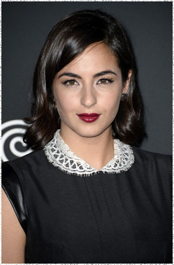

Аланна Мастерсон
 Тара Чемблер (актриса Аланна Мастерсон) - введена в группу Гленном и Мэгги, полная решимости помочь им.
Уроженка Лонг-Айленда, Нью-Йорк, Аланна Мастерсон младшая сестра четырех старших братьев – Дэнни, Криса, Уилла и Джордана все из которых нашли успех в Голливуде.
Мастерсон совершила свой актерский прорыв в детстве, изображая молодую Коллин Карлтон в сериале Молодые и дерзкие с 1994 по 1995 год. Её таланты постоянно развивались через гостевые роли в таких телесериалах как: Малкольм в центре внимания, Университет, Терминатор: Битва за будущее, Анатомия страсти, Мужчины в деле и в последнее время в комедийном сериале Первый день. Мастерсон также снялась вместе с Тайлером Блэкберном и Маккензи Филлипс в независимом фильме Персик Слива Груша, за роль в котором она получила награду за лучшую женскую роль на двух различных кинофестивалях.
Как выпускница Нью-Йоркской киноакадемии, Мастерсон также имеет опыт работы и за пределами камеры в качестве сценариста и режиссера. Для своей дипломной работы, она сняла короткометражный фильм с участием Агнесс Дейн, её брата Джордана Мастерсона и Джейка Хоффмана.
Наиболее известена по фильмам:
Анатомия страсти
Университет
Малкольм в центре внимания
Мужчины в деле
Молодые и дерзкие